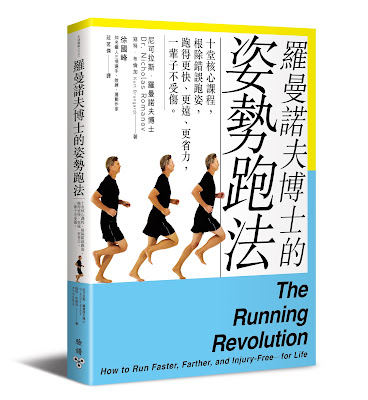

← 回部落格
新譯作：《羅曼諾夫博士的姿勢跑法》(The Running Revolution)

能完成這本譯作首先要感謝茗傑，願意跟我一起接下這個挑戰，這次的挑戰超乎我們的預期，把我們倆都給磨下一層皮來了。呼……！終於完成了，謝謝你。
四年多前翻譯的《跑步，該怎麼跑？》，這個月底也將同時出第二版。這本書已經把跑步技術的理論與心法描述清楚，而新出版的《羅曼諾夫博士的姿勢跑法》則是把「該怎麼練」的詳細流程一步步地整理出來。
書中把跑步技術的學習流程分成四個部分：
- 學習姿勢跑法前的準備工作
- 十堂跑步技術課
- 跑步循環訓練
- 依不同的目標賽事執行訓練計畫
自從我在二〇一〇年學習了姿勢跑法之後，開始認識到跑步技術的重要性，也因為學習了這個技術，使得我的全馬、標鐵、半超鐵與超鐵成績都破了個人最佳成績。欣喜之餘，竟發現全台灣還有許多熱愛跑步的跑者都還不知道跑步技術的重要性和訓練方式，所以當時才有一股很大的衝動要把羅曼諾夫博士的研究翻成中文。
如今，這兩本書已經陳列在台灣跑者的面前。如果你也喜歡跑步的話，想必也會跟我一樣著迷於書中的知識，一邊讀一邊情不自禁地站起來練功。雖然這些技術訓練動作，不像上路迎風奔馳，可以使你熱血沸騰，也有點枯燥乏味，但只要你耐著性子練下去，必然會變成一位更強、更快與更不容易受傷的跑者。
PS 這本書的簡體版在大陸由浙江人民出版社出版，書名直譯為《跑步革命》(簡體版的譯者為王澎老師，由我擔任審訂人)。
徐國峰・KFCS 耐力訓練系統
看更多文章 →